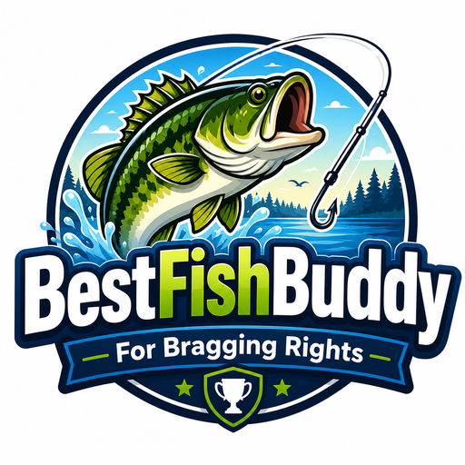

From logging your catch to finding the best fishing times — Best Fish Buddy has you covered.
Record every catch with species, weight, length, location (GPS auto-fills), weather, and photos. Voice logging lets you go hands-free — just say "record"!
Identify any fish with 305 freshwater species in the database. Each species has photos, descriptions, size ranges, habitat info, diet, and fishing tips. Filter by water type or browse by region.
See all your catches plotted on a map with species pins. A collapsible side panel gives you quick access to nautical charts, depth contours, weather radar, GPS locate, and saved spots. Long-press anywhere to save a spot or log a depth reading.
OpenSeaMap overlays show water depths, shipwrecks, buoys, and navigation aids. Toggle depth contour lines to find drop-offs, deep holes, and underwater structure where fish hold.
See live weather on the map — toggle between cloud cover, precipitation radar, and temperature overlays. Plan around incoming storms or find the clearest skies for your trip.
Tap two corners on the map to select exactly which area to cache. Name your region and it downloads base maps plus active overlays (nautical, depth, weather) for offline use. Manage regions individually.
Long-press on the map to log a depth reading from your fish finder (or an estimate). Saved with exact GPS coordinates. Toggle depth markers on the map to see all logged depths. Every submission helps build a free community depth database.
Real-time weather conditions and 5-day forecast. Solunar-based predictions show you the best fishing periods, moon phases, wind, and marine conditions for your location. Get push notification alerts for severe weather.
Hands-free operation — say "fish buddy jason caught a pike" to tally fish per angler. Voice fills in catch forms: "photo", "weighs 5 lb", "length 20 inches", "save".
Track your lures, hooks, lines, and baits. Browse 30+ common lure types with photos and target species. Get weather-aware tackle recommendations for your target fish.
Detailed charts of your fishing activity, personal records, species breakdown. Earn badges: First Catch, Master Angler, Species Collector, Big Catch, and more.
View your catch history on a calendar heatmap — days with catches are highlighted. Browse all catch photos in a gallery view.
Search any lake in Canada and the US to see what fellow anglers are catching. See top lures, best weather conditions, and peak months — powered by Google Places. Plan your trip before you go!
Back up your catches to the cloud and sync across devices. Fish Together mode lets you share catches and chat with friends in real time during a session.
Get notified for weather alerts (severe storms, high winds), daily solunar best fishing times, and Fish Together session activity. Permission is requested contextually — not on first launch.
Available in English, French, Spanish, German, and Ukrainian. Full translation of all features, help text, and walkthrough.
Start with the Free version — upgrade to Pro when you're ready for the full experience.
| Feature | 🆓 Free | ⭐ Pro |
|---|---|---|
| Log catches with photos, GPS & weather | ✓ (10 catch limit) | ✓ |
| Fish ID — 305 species field guide | ✓ (first 10) | ✓ |
| Interactive map with catch pins | ✗ | ✓ |
| Map tools: nautical, depth, weather radar | ✗ | ✓ |
| Offline region caching | ✗ | ✓ |
| Weather & 5-day forecast | ✓ | ✓ |
| Solunar best fishing times | ✓ | ✓ |
| Tackle box & catalog | ✓ (10 items) | ✓ |
| Voice controls | ✓ | ✓ |
| Calendar & gallery | ✓ | ✓ |
| Multi-language (EN/FR/ES/DE/UK) | ✓ | ✓ |
| Community lake stats | ✗ | ✓ |
| Cloud sync & Fish Together sessions | ✗ | ✓ |
| Stats, charts & achievement badges | ✗ | ✓ |
| Delete catches | ✗ | ✓ |
| Unlimited catches & tackle | ✗ | ✓ |
| 📱 Download Free | ⭐ Get Pro |
Point your phone camera at the QR code to get the Free version instantly.
Or visit tinyurl.com/2a2kkl7r on your phone
Download the Free version or upgrade to Pro. Questions? We're here to help.
Interested in Pro? Email us to purchase a license code.
Pro is a one-time purchase — unlock everything forever.